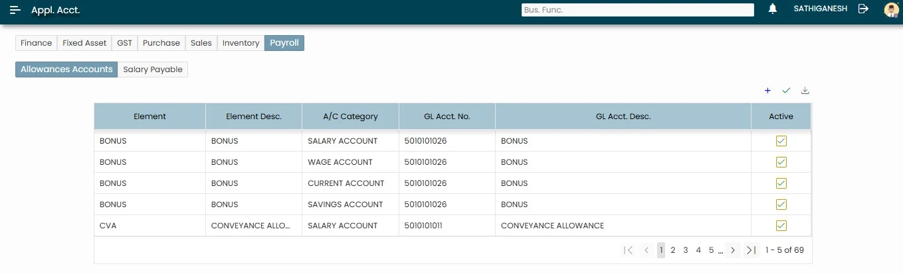
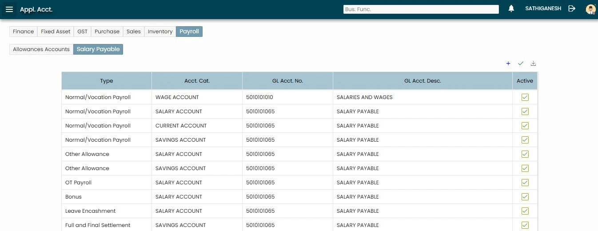

<div data-category="Financials" data-title="Application Journal Accounts – Appl. Acct. (Payroll)" data-updated="December 01, 2025" data-contributors="RoadmapIT" data-breadcrumb="Home,Financials,Application Journal Accounts – Appl. Acct. (Payroll)">
  <div class="page-content">
    <p>This screen is used to define Application journal Accounts for Appl. Acct. (Payroll).</p>
    <h5>Navigation path:</h5>
    <p class="fs-6">Financial \ Setup \ CPC/GL account \ appl. accts(payroll).</p>
    <h2>Allowances Accounts \ Dept./Element / Acct. Category:</h2>
    <p>This tab is used to set application accounts for Allowances accounts \ Dept./Element/Account category in HR & Payroll.</p>
    
    <ul style="list-style-type: none; align-content: center">
      <li class="mouse-icon">
        Click
        <i class="bi bi-plus fs-4 mx-2 text-primary"></i>
        to add.
      </li>
      <li class="mouse-icon">Select an element and account category from LOV.</li>
      <li class="mouse-icon">Select an Account from LOV.</li>
      <li class="mouse-icon">
        Click
        <i class="bi bi-check-lg fs-4 mx-2 text-success"></i>
        to save.
      </li>
    </ul>
    <h2>Salary Payable:</h2>
    <p>This tab is used to set application accounts for Salary Payable in HR & Payroll.</p>
    
    <ul style="list-style-type: none; align-content: center">
      <li class="mouse-icon">
        Click
        <i class="bi bi-plus fs-4 mx-2 text-primary"></i>
        to add.
      </li>
      <li class="mouse-icon">Select a Payroll type in list.</li>
      <li class="mouse-icon">Select an account category from LOV.</li>
      <li class="mouse-icon">Select an Account from LOV.</li>
      <li class="mouse-icon">
        Click
        <i class="bi bi-check-lg fs-4 mx-2 text-success"></i>
        to save.
      </li>
    </ul>
  </div>
</div>
